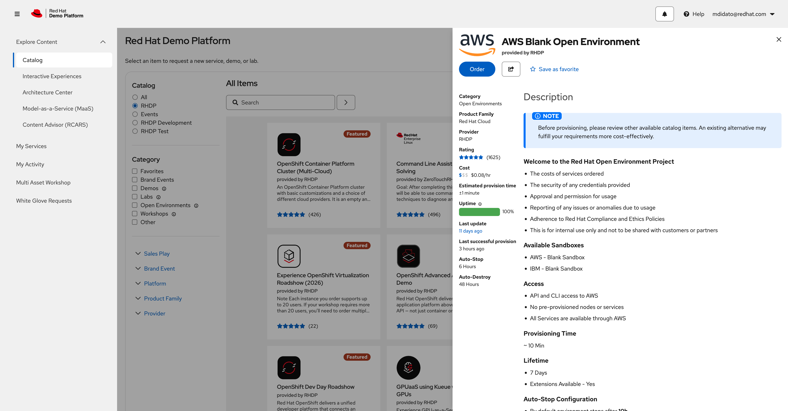
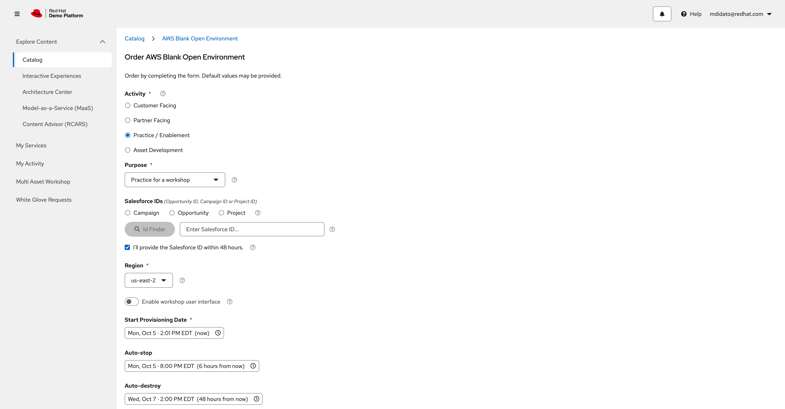
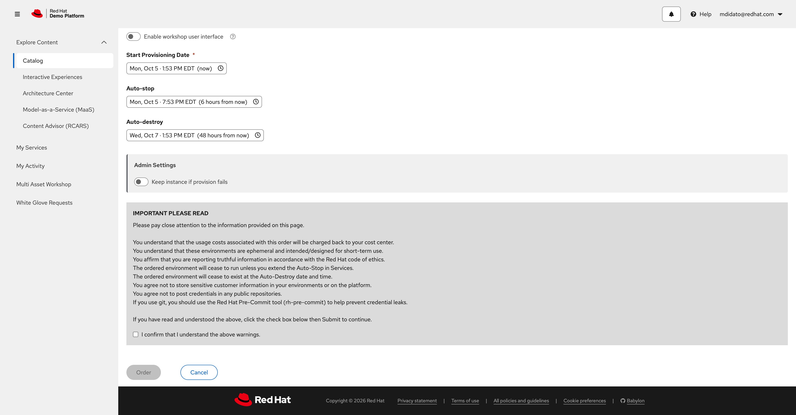

Lab: Delivering with AI
Work as a small delivery team to design, develop, and deploy a fault-tolerant web application that meets the requirements of the exercise.
Learning Objectives
After completing this module, you will be able to:
-
Use Cursor AI to help develop and deploy a fault-tolerant web application
-
Use Cursor AI to help develop an Ansible project that deploys your web application on AWS
-
Collaborate with your group to deliver the best possible product in the given time frame
-
Present your design to a room of your peers
Before you start
-
Finish Module 1 so Cursor and the Ansible Development Tools container are working.
-
You need a Red Hat associate (or partner) login for catalog.demo.redhat.com.
-
Your facilitator assigns groups of four at random and gives your team a number (for example
1,2,3). -
Lab assets:
workshop-content/04-aws-lab-provisioning/(start from a blank slate—no starter playbooks are provided)
Challenge brief
This lab is a timed, independent team challenge—not a click-through tutorial for the application itself.
| Item | Rule |
|---|---|
Team size |
4 people, assigned randomly by the facilitator |
Time to build |
1 hour to design, build, and test |
Time to present |
5 minutes per team after time is called |
Environment |
One blank AWS account per team, ordered from RHDP (see below) |
Independence |
Teams must not share designs, playbooks, or credentials with other teams |
Requirements (mandatory)
-
The application must be fault tolerant.
-
The application and all AWS infrastructure must be deployed and updated using Ansible.
-
When time is called, all demo code must be committed and pushed to your team’s branch:
group_<team_number>(for examplegroup_1).
You have free range on architecture, instance types, load balancing, health checks, and how you prove fault tolerance—as long as those three requirements are met and the workload runs on EC2.
1: Get your team and branch
-
Wait for the facilitator to announce groups and team numbers.
-
One person in the team clones (or already has)
https://github.com/redhat-services-platform-team/ansible-amers-ai-workshopand opens it in Cursor. -
Create or check out your team branch. Replace
Nwith your team number:
git fetch origin
git checkout main
git pull origin main
git checkout -b group_N
git push -u origin group_N-
If the facilitator already created
group_Non the remote:
git fetch origin
git checkout group_N
git pull origin group_N-
Create your Ansible project under
workshop-content/04-aws-lab-provisioning/from a blank slate. -
Do not commit AWS keys, secret keys, or
credentials.yml.
2: Order the AWS Blank Open Environment
One person per team orders the catalog item. Share the resulting credentials only with your three teammates.
-
Open the catalog item:
-
Sign in with Log in with sso (Red Hat associates) or the partner login if that is how you access RHDP.
-
Confirm the drawer title is AWS Blank Open Environment (category Open Environments, provided by RHDP).

You should see a blue Order button, share, and Save as favorite. Cost is shown on the item (about $0.08/hr plus whatever you run in AWS). The sandbox is blank: API and CLI access, no pre-provisioned nodes or services, listed provision time about 10 minutes, default lifetime 7 days, and auto-stop after 10 hours (disable later in My Services if instances stop during the hour).
-
Select Order.
The form title is Order AWS Blank Open Environment. Complete it as follows (leave any field not listed at its default):
-
Activity — Practice / Enablement
-
Purpose — Practice for a workshop
-
Salesforce IDs — check I’ll provide the Salesforce ID within 48 hours.
-
Region — us-east-2 (use this same region in your Ansible variables)
-
Enable workshop user interface — leave off
-
Start Provisioning Date — leave now
-
Auto-stop / Auto-destroy — leave the defaults (typically six hours and 48 hours)

Scroll to IMPORTANT PLEASE READ, check I confirm that I understand the above warnings., then select Order.

|
RHDP bills usage to your cost center. Prefer small instance types, tear down what you create, and delete the RHDP service when the workshop is over. |
-
Wait until the service shows as ready (My Services in the left navigation). Provisioning is often a few minutes (the catalog lists about 10 minutes).
-
Open the service. Copy, for your team only:
-
AWS console URL (or federation link)
-
AWS account ID
-
Access key ID and secret access key
-
Default region (usually
us-east-2) -
Route 53 / sandbox domain if shown (for example
sandboxNNNN.opentlc.com)
-
A confirmation email from RHDP often contains the same values.
|
Treat keys like passwords. Do not paste them into git, Slack channels shared with other teams, or Cursor prompts that might log secrets. |
3: Configure AWS access for Ansible
On the machine that will run Ansible (the ADT Dev Container is fine):
export AWS_ACCESS_KEY_ID='<from RHDP>'
export AWS_SECRET_ACCESS_KEY='<from RHDP>'
export AWS_DEFAULT_REGION='us-east-2'Or write ~/.aws/credentials (this path is outside git):
[default]
region = us-east-2
aws_access_key_id = <from RHDP>
aws_secret_access_key = <from RHDP>Verify:
ansible-galaxy collection list | grep amazon.aws || ansible-galaxy collection install amazon.aws community.aws4: Design, build, and test (1 hour)
The facilitator starts the clock when teams have credentials (or when they announce start).
Work only with your team. Suggested split (not required): architecture, Ansible roles/playbooks, application, test/failover demo.
Prove fault tolerance before time is called (for example stop an instance or an AZ and show the app still answers). Record how you tested—you will present it.
Using Cursor can help speed up your code development, but you are still responsible for playbooks that actually run and for not leaking secrets into prompts or commits.
5: Commit when time is called
Stop building. Commit everything needed to understand and redeploy your demo except secrets.
git status
git add workshop-content/04-aws-lab-provisioning/
git commit -m "Group N fault-tolerant AWS demo"
git push origin group_NConfirm the remote branch is group_<team_number> on https://github.com/redhat-services-platform-team/ansible-amers-ai-workshop.
6: Present (5 minutes)
Cover, briefly:
-
What you built and why it is fault tolerant
-
How Ansible deploys and updates both the app and AWS
-
How you tested failure
-
How you planned to manage AI usage costs while creating and deploying the application (models, prompt strategy, spend awareness)
-
Anything you would change with more time
7: After the lab
-
Vote using the judging scorecard if the facilitator asks attendees to score.
-
Delete AWS resources with Ansible if you wrote teardown playbooks.
-
In RHDP My Services, delete or expire the AWS Blank Open Environment so it does not keep billing.
Troubleshooting
| Symptom | What to try |
|---|---|
Catalog login loop |
Use associate SSO; confirm you can open other RHDP catalog items |
Order button disabled |
Complete required fields, Salesforce ID or 48-hour checkbox, and the cost warning checkbox |
Service not ready after ~10 minutes |
Refresh My Services; check email; ask the facilitator before ordering a second account |
Ansible cannot authenticate to AWS |
Confirm |
Instances auto-stopped mid-lab |
In the RHDP service, disable auto-stop; start instances again and continue |
Push to |
Confirm you are on |
Additional resources
-
Catalog item: AWS Blank Open Environment